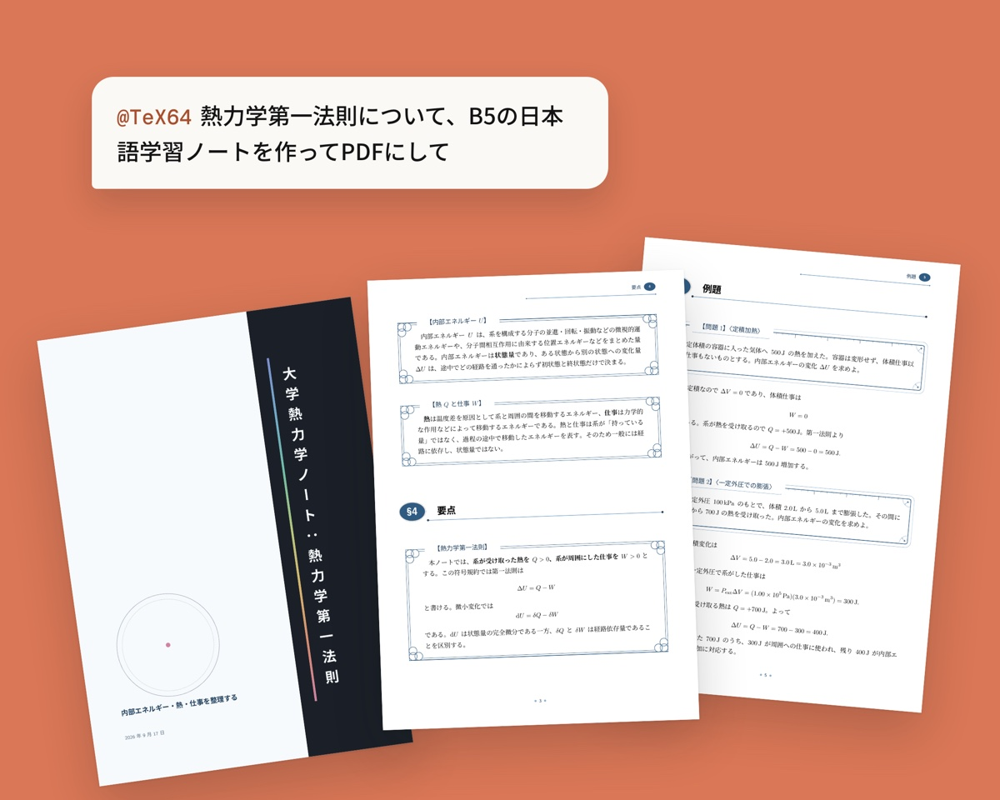

ChatGPT・Claudeのプラグインとして公開中
Available as a ChatGPT & Claude plugin
TeX64 MCP
ChatGPTやClaudeから、講義資料を数式入りの日本語PDFに組版するMCPサーバ。TeXのインストールは不要で、ChatGPTでは @TeX64 と呼ぶだけで使える。
An MCP server that lets ChatGPT and Claude typeset course material into Japanese PDFs, equations and all, with no TeX install. In ChatGPT, just mention @TeX64.
- ChatGPTプラグインディレクトリで公開（Education & Research）Published in the plugin directory (Education & Research)
- ClaudeプラグインをGitHubで公開。公式ディレクトリの審査を通過Plugin on GitHub; approved for the official directory
- MCPmcp.tex64.com